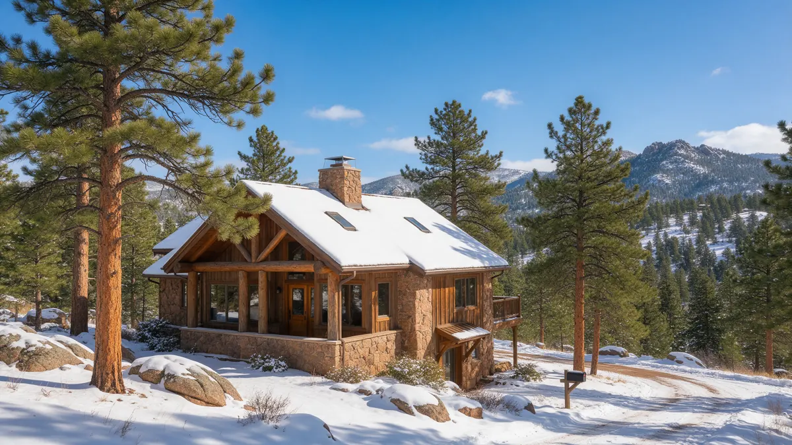

Evergreen CO Plumber Handbook for Leaks

Looking for a plumber in Evergreen CO? Mountain living brings its own plumbing decisions, and this handbook covers them in the order you will meet them. Plumbing Pros Colorado is a referral line that connects you with independent local plumbers, who then handle the work. Read on for emergency steps, the signs worth watching, and how Jefferson County foothill conditions change the picture.
Immediate steps when water is loose in the house
Close the main shutoff first. In many mountain homes it sits in a utility room, a crawl space or beside the well pressure tank, so learn where it is before you need it. If you have a private well, also switch off the pump breaker so it does not keep pushing water into a broken line.
Then open a low tap to drain what is left in the pipes, move valuables out of the wet area, and photograph the damage. If a ceiling is bulging, poke a small hole in the lowest point into a bucket to relieve the weight, and keep clear of any electrical fixtures.
- Close the main valve
- Switch off the well pump at the breaker
- Drain a low faucet
- Protect electrical items
- Photograph the damage
Warning signs for foothill homes
Homes around Evergreen Lake, Hiwan and Kittredge often have long supply runs to garages, decks and guest rooms. Clues of trouble include a pressure tank that cycles when nobody is using water, damp insulation in a crawl space, a hot water line that runs warm to the touch overnight, or a patch of unusually lush grass above a buried line.
Mountain water can carry minerals that leave scale in fixtures and heaters. Heavy scale narrows pipes and stresses fittings, so crusty buildup on a faucet is worth mentioning to the plumber as well.
Cabins and older chalets near Evergreen often have additions where a bathroom was added at the far end of the house. Those long dead-end branches can sit unused and freeze more easily, so ask about draining or insulating them.
How a plumber usually diagnoses a mountain home
The visit often starts at the well or the meter, depending on your supply. The plumber checks pressure, listens along the line, and may pressure test sections of pipe. In a house on a septic system, a sewer or tank question may also come up, and some of that work belongs to septic specialists rather than plumbers.
Access can be part of the diagnosis. Narrow roads off Highway 74 and Highway 73, steep driveways in Indian Hills and winter ice can all affect scheduling and which equipment can reach your site. Share your address details and any gate codes or road conditions when you call.
If your house sits off Upper Bear Creek Road or a similar canyon route, tell the plumber about road conditions, grade and parking. A heavy van on a narrow switchback can be a real constraint, and early notice avoids wasted trips.
Questions to ask the plumber you are connected with
Ask where the leak is and whether it is on the pressurized supply side, the drain side, or the well line. Ask what pipe material you have, and whether the repair will use PEX, copper or another material that suits freezing temperatures.
Ask whether the work might involve a county or utility permit, and what happens if the crawl space or ground turns out to be in worse shape than expected. Remember that the plumber is independent, and the working arrangement is between you and them.
A plumber working on a well-fed home may also check the water at the tap for color and sediment. Iron and sediment are common in mountain wells and can clog aerators and shorten the life of fixtures and heaters.
Repair or replace: what changes the decision
A split pipe from one freeze is usually a repair, particularly if the rest of the line is sound. A line that runs through a vented crawl space and has frozen repeatedly may call for rerouting, insulation, or heat tape rather than another patch. Age of the well pump and pressure tank matters too, since a leaking line can wear them down.
If the leak involves a buried line from the well to the house, the choice between digging and other methods depends on rock, slope and tree roots, all common along Bear Creek and the canyons around town.
If the repair involves a long run, ask whether the plumber recommends a shutoff valve at each branch. Extra valves make future repairs less disruptive and let you isolate a guest suite or garage line during a cold spell.
Preventing the next one
Evergreen sits near 7,000 feet, and freezing nights stretch long into spring. Insulate pipes in exterior walls, seal gaps where lines enter the house, and keep heat on in winter even when you leave. Open cabinet doors on cold nights and let a faucet drip in a hard freeze.
If you own a second home, ask a neighbor to check in after power outages, and consider a leak alarm that sends alerts to your phone. A few small habits protect a mountain house better than any single repair.
Frequently asked questions
Do I need a different plumber if I am on a well?
Many plumbers work on well-fed homes, but not all do pump or pressure tank work. Mention your well when you call so the right plumber is connected. Septic tank and drain field problems may be handled by a separate septic company. Treat the sound of a pump running with no use as a clue, and shut it off at the breaker until a plumber checks the system to avoid burning out the motor.
Is a dripping faucet worth fixing in winter?
Yes, a drip wastes water and can add load to a well pump or septic system. It is also a clue that a washer or cartridge is worn. Using a dripping faucet on purpose during a hard freeze is a different thing, and it can protect a vulnerable line. A burst pipe in a cabin can flood floors for hours. Closing the main, then drying quickly, matters most to limit mold and warped floors.
What should I check when I return to a cold cabin?
Look at the thermostat, then walk the house for wet floors, stains and the sound of running water before turning anything on. Open the main slowly and watch for leaks. If anything looks damp, close the main again and call a plumber. Septic specialists pump tanks, inspect baffles and test drain fields. Plumbers handle pipes inside and up to the tank. Ask which one fits your problem.
Can wildfire or storms affect my plumbing?
Power outages can stop a well pump and let a home chill. Smoke or fire damage can melt plastic fittings and exposed lines. After any such event, have a plumber inspect pressure and visible lines before relying on the system again. Without a meter, watch the pressure tank gauge and well pump cycles with all fixtures off. A steady drop points to a leak.
How do I find the shutoff for a buried line?
Look for a valve box or a lid near the property line or the house wall, and check closing documents or any past plumbing invoices. A plumber can locate it with a line tracer if needed. Mark the spot once you know where it is. Warming pipes can reveal damage, since splits that held ice leak freely once it melts. Thaw and inspect with the water off.
Plumbing services in Evergreen
- Water Leak Repair
- Emergency Plumbing
- Drain Cleaning
- Water Heater Services
- Sewer Line Repair
- Gas Line Services
- Slab Leak Repair
- Pipe Repair & Replacement
- Toilet Repair
- Bathroom Plumbing
Nearby Colorado cities
- Water leak repair in Boulder
- Water leak repair in Arvada
- Water leak repair in Colorado Springs
- Water leak repair in Broomfield
Ready to talk to someone? Call (720) 794-0974 or visit connect with a foothills plumber.